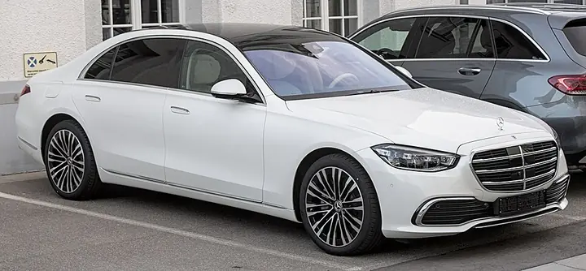

Mercedes-Benz S-Class
Seventh generation (W223; 2020) · 2020–present
Duel
The Mercedes-Benz S-Class (2020–present) against the BMW 7 Series (2022–present). The S-Class W223 is 212 mm shorter and 109 mm shorter in wheelbase than the BMW 7 Series G70 (first figures given).

Seventh generation (W223; 2020) · 2020–present

Seventh generation (G70/G73; 2022) · 2022–present
| Production | September 2020–present | July 2022 – present |
|---|---|---|
| Body | 4-door saloon | 4-door sedan |
| Layout | Front-engine, rear-wheel-drive or all-wheel-drive (4MATIC) | Front-engine, rear-wheel-driveFront-engine, all-wheel-drive (xDrive)Rear-motor, rear-wheel-drive (i7 eDrive50)Dual-motor, all-wheel-drive (i7 xDrive60, M70) |
| Engines | Petrol:2.5 L M256 turbo I6 (China)3.0 L M256 turbo I64.0 L M176 twin-turbo V86.0 L M279 twin-turbo V12Petrol plug-in hybrid:3.0 L M256 turbo I64.0 L M176 twin-turbo V8 | Petrol mild hybrid:3.0 L B58 turbo I64.4 L S68 twin-turbo V8Petrol plug-in hybrid:3.0 L B58 turbo I6Diesel mild hybrid:3.0 L B57 turbo I6 |
| Electric motor | 48 V electrical system (EQ Boost)Schaeffler PSM P2 Hybrid Module High Voltage gearbox-mounted electric motor (PHEV)140 kW synchronous electric motor (63 S E Performance) | — |
| Battery | Up to 29 kWh high-voltage lithium ion | 20 Ah lithium-ion (mild hybrid)18.7 kWh lithium-ion (plug-in hybrid)105.7 (101.7 usable) kWh lithium-ion (i7)118.1 (112.5 usable) kWh Cylindrical cell Li-NMC (i7 LCI) |
| Gearbox | 9-speed 9G-Tronic/9G-Tronic plug-in-hybrid automatic | 8-speed ZF 8HP automaticSingle-speed (i7) |
| Length | 5179 mm (W223)5289 mm (V223)5460 mm (Z223) | 5391 mm |
| Width | 1954 mm | 1950 mm |
| Height | 1503 mm | 1544 mm |
| Wheelbase | 3106 mm (W223)3216 mm (V223)3396 mm (Z223) | 3215 mm |
| Weight | 1995–2350 kg | 2075-2270 kg2595-2770 kg (i7) |
Sources: Wikipedia: Mercedes-Benz S-Class · Wikipedia: BMW 7 Series (G70).
_750e_IMG_9358.jpg){kind=link}